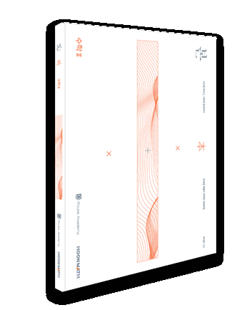
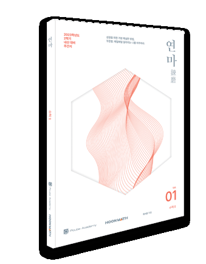
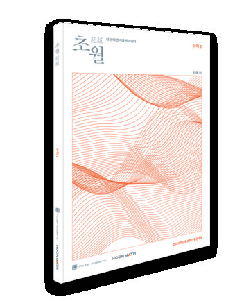
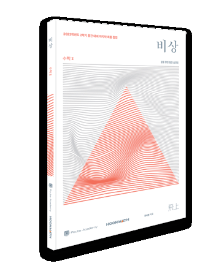
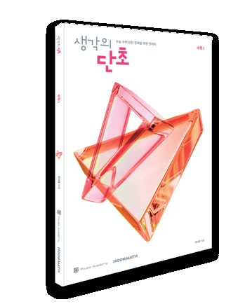
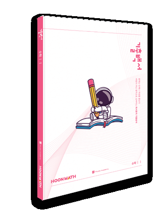
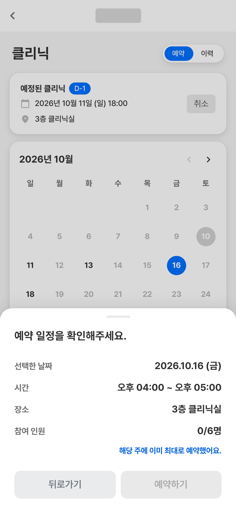

목동 예섬학원
대일고1학년
공통수학1 중간고사 대비
개강 3월 2일
- 화
- pm 6:00 - 9:30
- 토
- pm 1:30 - 5:00
최서훈수학 · HOONMATH
수학 1등급을 향한 여정,'누구나' 시작할 수 있습니다.하지만 '아무나' 결승선에 도달할 순 없습니다.자신과 타협하지 않고 묵묵히 正道를걸어가는 사람만이 승리합니다.그 위대한 여정, 끝까지 함께 하겠습니다.

고등수학 강사
현) 목동 예섬학원
수업안내 · CLASS SCHEDULE
임시 시간표 안내아래 강좌는 구성 예시입니다.
개강일·요일·시간은 아직 확정되지 않았습니다.
목동 예섬학원
공통수학1 중간고사 대비
개강 3월 2일
목동 예섬학원
공통수학1 중간고사 대비
개강 3월 4일
교과서 개념에 관한 생각의 방향, 생각의 깊이를 제시하여 개념의 본질적 접근을 지향합니다.
논리적 서술 훈련을 통해 개개인의 사고 과정을 검증하고 계산 실수를 개선합니다.
교과서 개념을 기반으로 하는 일관적이고 논리적인 풀이 훈련을 통한 독해력 및 문제 해결 능력을 배양합니다.
모든 문제 풀이에 학생 스스로 납득할 수 있는 필연성을 부여하여 실전에서 스스로 풀어낼 수 있는 힘을 길러줍니다.
특정한 상황에만 적용할 수 있는 스킬을 지양하며, 오직 교과 개념을 활용한 일관된 풀이로 모든 문항을 해결합니다.
LEARNING ROADMAP
개념부터 실전까지.
한 단계씩 연결되는 학습.
정의와 정리를 정확히 이해하고, 필수 예제로 생각의 출발점을 만듭니다.
배운 개념을 스스로 적용하며 풀이의 근거와 사고 과정을 정리합니다.
기출 문항의 조건과 핵심을 읽고, 문제 해결의 원칙을 익힙니다.
취약한 개념과 오답을 돌아보며 실전에서 필요한 풀이 태도를 점검합니다.
CLASS MATERIALS
개념의 시작부터 실전의 마무리까지.
학습 단계에 맞춰 이어지는 교재 구성.

확대 보기기본 개념부터 심화 개념까지,
개념의 구조를 세우는 시작.

확대 보기매일의 꾸준한 연습으로,
배운 내용을 자신의 것으로.

확대 보기기출과 심화 문항을 바탕으로,
문제 해결의 폭을 넓히는 과정.

확대 보기핵심 개념과 주요 문항을 돌아보며,
시험 직전 생각을 정리하는 마무리.

확대 보기개념과 문제가 결합하는 과정을,
일관된 논리로 이해하는 학습.

확대 보기기출에 담긴 핵심을 읽고,
변하지 않는 풀이의 원칙을 정리.
위 이미지는 2025년 수업 자료의 교재 예시입니다. 현재 수업에서 사용하는 교재는 수강 상담 시 안내합니다.
LEARNING CARE
출결기록 / 반별 누적 테스트 성적표 / 클리닉 예약 / 복습영상 시청 / 상담 예약 까지 학생 및 학부모님 모두 언제든지 확인 가능합니다.
